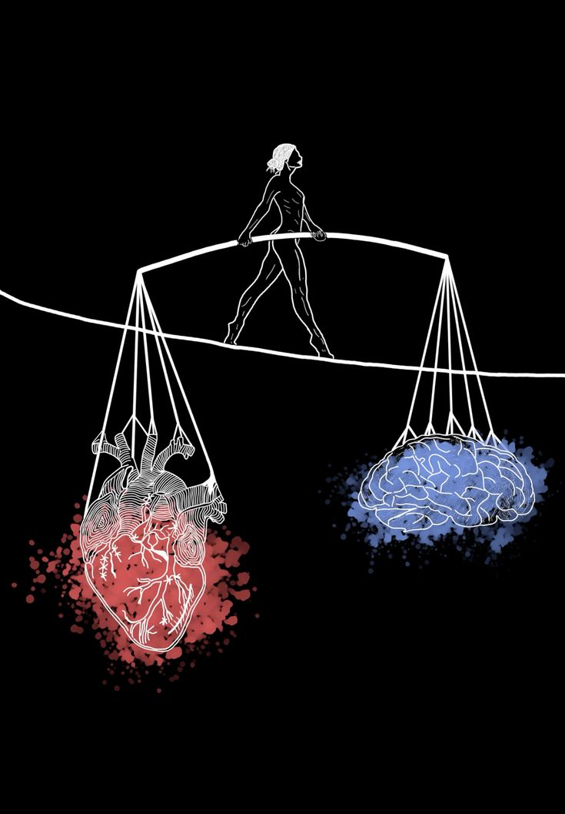

Nel mio futuro vedo prima di tutto il successo, ma non solo quello economico: un successo costruito con impegno, disciplina e determinazione. Per me viene prima di tutto, insieme alla mia stabilità personale ed emotiva, perché senza equilibrio non si può costruire nulla di solido. Mi immagino mentre entro all’università per studiare Giurisprudenza, una scelta che nasce dalla mia passione per il diritto, per la giustizia e per la voglia di difendere ciò che è giusto. Studiare legge sarà una sfida impegnativa, ma sono pronto ad affrontarla con costanza e sacrificio. Nel mio futuro mi vedo diventare un avvocato, una persona competente, rispettata e sicura di sé, capace di aiutare gli altri e di farsi strada con le proprie forze. So che il percorso sarà lungo, ma il mio obiettivo è chiaro: costruire una carriera solida, raggiungere il successo e vivere una vita stabile e soddisfacente.
